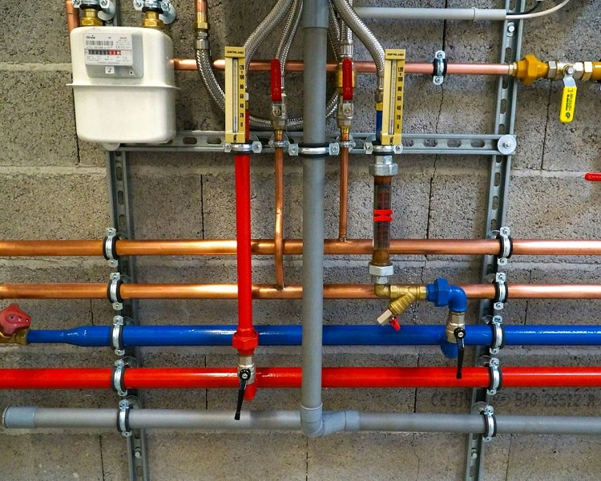
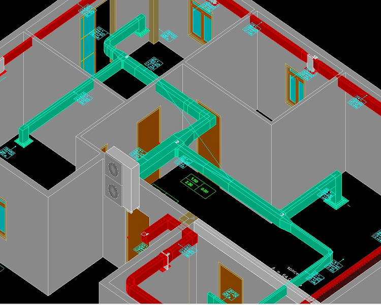
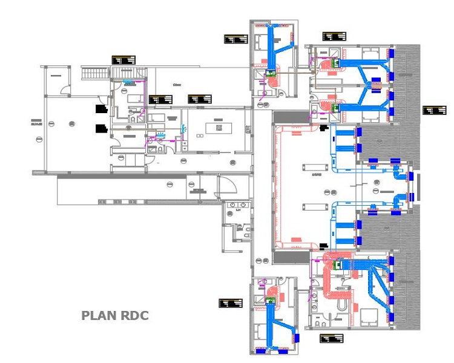
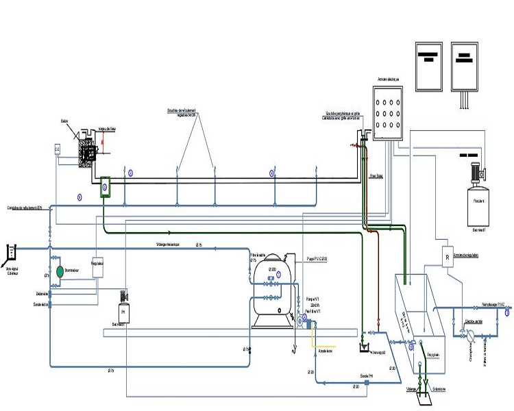

Nous sommes fiers de vous présenter notre bureau d'étude Sigma ICC, spécialisé dans l'étude en CVC et désenfumage. Nous mettons notre expertise à votre disposition pour concevoir et installer des systèmes de qualité répondant aux normes en vigueur.
Notre service en étude CVC et désenfumage inclut la réalisation des plans, le choix des équipements, la coordination avec les autres corps de métier impliqués dans le projet, ainsi que la mise en service et la maintenance des systèmes une fois installés. Nous sommes à l'écoute de vos besoins et prenons en compte vos contraintes pour proposer une solution sur-mesure pour votre bâtiment.
Nous sommes conscients de l'importance de la sécurité incendie et de la qualité de l'air intérieur dans les bâtiments modernes. C'est pourquoi nous mettons notre savoir-faire et notre expérience à votre disposition pour garantir la meilleure qualité de vie et sécurité à vos occupants. Nous nous engageons à offrir une prestation de qualité, respectueuse de l'environnement et en adéquation avec les normes en vigueur.
En choisissant Sigma ICC pour votre projet en étude CVC et désenfumage, vous pouvez avoir la garantie d'un travail bien fait, d'un respect des délais et d'une écoute attentive de vos besoins. Nous sommes passionnés par notre métier et nous nous engageons à offrir des prestations de qualité à nos clients. N'hésitez pas à nous contacter pour plus d'informations sur nos services.




FAQ : Plomberie
Comment éviter les fuites d'eau dans la maison ?
Pour éviter les fuites d'eau, il est important de surveiller régulièrement les tuyaux et les raccords pour détecter toute fuite. Il est également important de remplacer les vieux tuyaux et les raccords défectueux pour éviter les fuites à long terme. Enfin, il est important de ne pas surcharger les canalisations avec des déchets ou des produits non solubles qui peuvent obstruer les tuyaux et causer des fuites.
Comment réduire la consommation d'eau dans la maison ?
Pour réduire la consommation d'eau dans la maison, vous pouvez installer des robinets à faible débit, des toilettes à faible débit et des pommeaux de douche à faible débit. Vous pouvez également éviter de gaspiller de l'eau en fermant les robinets lorsque vous vous brossez les dents ou vous vous rasez, en réparant rapidement les fuites d'eau, et en arrosant le jardin tôt le matin ou tard le soir pour éviter l'évaporation de l'eau.
Comment déboucher les canalisations de manière efficace ?
Pour déboucher les canalisations efficacement, vous pouvez utiliser des produits de nettoyage spécialement conçus pour les canalisations, ou vous pouvez utiliser des remèdes maison tels que le bicarbonate de soude et le vinaigre blanc. Il est également important de ne pas jeter de déchets solides dans les canalisations, car cela peut causer des obstructions et des blocages.
Comment choisir le bon chauffe-eau pour sa maison ?
Le choix du chauffe-eau dépend de plusieurs facteurs, notamment la taille de votre maison, le nombre de personnes qui y habitent, vos habitudes de consommation d'eau chaude, et votre budget. Vous pouvez choisir entre des chauffe-eaux électriques, des chauffe-eaux à gaz, des chauffe-eau solaires et des chauffe-eaux à pompe à chaleur en fonction de vos besoins et de vos préférences.
Comment détecter une fuite d'eau dans la maison ?
Pour détecter une fuite d'eau dans la maison, vous pouvez surveiller votre facture d'eau pour détecter tout changement anormal dans votre consommation d'eau. Vous pouvez également écouter attentivement pour détecter tout bruit de fuite d'eau, ou utiliser un détecteur de fuite d'eau pour localiser rapidement la source de la fuite.
FAQ : CVC
Qu'est-ce que le CVC ?
Le CVC (Chauffage, ventilation et climatisation) est un système qui assure le confort thermique et la qualité de l'air dans un bâtiment en régulant la température, l'humidité et la qualité de l'air intérieur.
Quels sont les différents types de systèmes de chauffage disponibles ?
Il existe plusieurs types de systèmes de chauffage, tels que les chaudières à gaz, les pompes à chaleur, les radiateurs électriques, les planchers chauffants, etc. Chaque type de système a ses avantages et ses inconvénients, en fonction des besoins et du budget du client.
Quels sont les avantages de la ventilation mécanique contrôlée (VMC) ?
La VMC permet d'évacuer l'air vicié et les polluants de l'air intérieur pour maintenir une bonne qualité de l'air dans le bâtiment. Elle permet également de réduire les problèmes d'humidité et de condensation, ainsi que de réaliser des économies d'énergie en limitant les pertes de chaleur.
Comment choisir le système de climatisation le plus adapté à mon bâtiment ?
Le choix du système de climatisation dépend de plusieurs facteurs tels que la taille du bâtiment, l'isolation, l'orientation, l'utilisation, etc. Un professionnel en CVC pourra effectuer une étude thermique et proposer un système adapté aux besoins du bâtiment.
Comment entretenir mon système de CVC ?
Il est recommandé de faire un entretien régulier de son système de CVC pour assurer son bon fonctionnement et prolonger sa durée de vie. L'entretien peut inclure le nettoyage des filtres, la vérification des circuits électriques, la purge des radiateurs, etc. Il est conseillé de faire appel à un professionnel en CVC pour réaliser l'entretien.